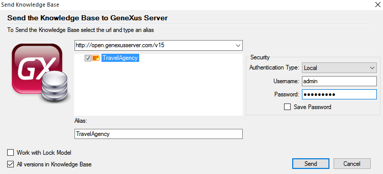
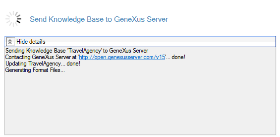
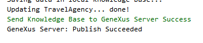

The Send Knowledge Base to Server operation is used when you have a local Knowledge Base and want to publish it in a GeneXus Server instance so it can be served as a teamworking GeneXus Server Knowledge Base. Step by stepAfter creating the local Knowledge Base, the following steps must be executed: 1) Select the Send Knowledge Base to Server option located under the File option. 2) A dialog will show up where you must enter the GeneXus Server url and the Knowledge Base alias. Note: the Knowledge Base alias must be unique in the GeneXus Server instance.  Notes:
3) After clicking Send GeneXus will gather all the necessary information from the local Knowledge Base to send it to the GeneXus Server instance. This process may take a few minutes, depending on the size of the Knowledge Base.  Check the Team Development output section for further information. A success message must be displayed; if not, see GeneXus Server Common Issues.  4) The Knowledge Base is now served by the selected GeneXus Server instance, so other users can perform a Create Knowledge Base from GeneXus Server operation (from the IDE or using Team Development MSBuild Tasks) and selecting the recently uploaded Knowledge Base. The local Knowledge Base is now linked to the one on the GeneXus Server. This means that from now on, you will be able to work in a team working environment by updating and committing changes. Note: once a Knowledge Base has been sent to a GeneXus Server instance, the option Send Knowledge Base to Server will be unavailable from the File menu. See also
|